أسرار وخفيات في علم الروحانية
Rahasia dan Hal-hal Tersembunyi dalam Ilmu Ruhani
Terjemah Indonesia dengan rajah dan wafak di bawah tiap penjelasan.
Disusun sebagai edisi digital untuk pembacaan, bukan sebagai senjata mudarat.
0 Catatan penerjemah
تنبيه الناشر
Repositori ini tidak menyertakan naskah PDF Arab halaman-demi-halaman. Edisi yang Anda baca disusun berdasarkan struktur kitab Asrār wa Khafiyyāt fī ʿIlm al-Rūḥāniyyah yang dikenal dalam tradisi ilmu hikmah — dinisbatkan kepada Syeikh ʿAṭiyyah ʿAbd al-Ḥamīd — dan dilengkapi dengan rajah/wafak yang dihitung ulang dari ilmu huruf dan aʿdād klasik (awfāq al-Būnī dan para pensyarahnya).
Isi yang tercatat pada naskah cetak antara lain: hijāb ʿaẓīm al-qadr, mutsallats Abū al-Fatḥ, mawaddah antara suami-istri, wafak Ahlul Kahfi musabbaʿ, wafak al-Jalālah khālī al-wasaṭ, wafak Samsamāʾīlī untuk menolak gangguan jin, wafak as-Suhrawardī untuk ḥall al-marbūṭ, dan wafak asy-Syaibānī atas rahasia Ayat al-Kursī.
Bab I Muqaddimah
المقدمة
Dengan nama Allah Yang Maha Pengasih, Maha Penyayang. Segala puji bagi Allah yang menjadikan huruf sebagai simpanan rahasia, angka sebagai timbangan alam, dan Al-Qurʾān sebagai penyembuh bagi apa yang ada di dalam dada. Selawat dan salam atas Nabi Muhammad ﷺ, kunci segala pembukaan.
Ketahuilah — semoga Allah menjaga hatimu — bahwa yang disebut ilmu ruhani dalam istilah ulama hikmah ialah pengetahuan tentang kesesuaian antara asma, huruf, bilangan, saat, dan niat, yang diikat kepada izin Allah. Ia bukan sihir yang menandingi takdir, dan bukan jalan pintas bagi orang yang malas beribadah. Barang siapa menuntutnya tanpa wudu hati, ia hanya mengumpulkan debu.
وَنُنَزِّلُ مِنَ الْقُرْآنِ مَا هُوَ شِفَاءٌ وَرَحْمَةٌ لِّلْمُؤْمِنِينَ
“Dan Kami turunkan dari Al-Qurʾān suatu yang menjadi penyembuh dan rahmat bagi orang-orang yang beriman.” (Al-Isrāʾ: 82)
Kitab ini menyingkap khafiyyāt — hal-hal yang disimpan — bukan supaya engkau sombong di hadapan manusia, melainkan supaya engkau mengenal bahwa setiap kotak wafak hanyalah cermin kecil dari tartīb ilahi. Jika niat rusak, kotak itu kosong. Jika niat benar, yang bekerja tetap Allah.
Bab II Adab penuntut ilmu
آداب طالب هذا العلم
Para syeikh mewajibkan adab sebelum angka. Tanpa adab, wafak adalah kisi-kisi mati. Jagalah tujuh perkara ini:
- Niat hanya kepada Allah, untuk manfaat yang halal, tanpa zalim.
- Suci dari hadas, mulut dari dusta, perut dari yang syubhat.
- Menulis dengan khusyuk, menghadap kiblat bila mampu, pada saat yang sesuai.
- Tidak memamerkan rajah kepada orang yang mengolok, dan tidak menjualnya sebagai jimat yang “pasti manjur”.
- Melazimkan istigfar, selawat, dan wirid Al-Qurʾān — khususnya Al-Fātiḥah dan Ayat al-Kursī.
- Menjauhi darah, najis, dan segala syarat yang menyerupai sihir haram.
- Jika suatu amalan menuntut menyakiti orang atau memaksa cinta, tinggalkan. Itu bukan hikmah.
Tinta yang utama: zaʿfarān (kunyit safron) dicampur air mawar, atau tinta hitam yang suci, di atas kertas yang bersih, kulit rusa yang disamak secara halal, atau lempeng perak. Bukan syarat mutlak — yang mutlak adalah keikhlasan.
Bab III Ilmu huruf dan ḥisāb jummal
علم الحرف وحساب الجُمَّل
Setiap huruf Arab membawa bilangan. Dari bilangan disusun wafak: kotak ajaib yang jumlah setiap baris, kolom, dan diagonalnya sama. Itulah “asas” (tsābit) sebuah wafak. Abjad Maghribi (jummal besar) yang dipakai para ahli hikmah:
| Huruf | Nilai | Huruf | Nilai | Huruf | Nilai |
|---|---|---|---|---|---|
| ا | 1 | ي | 10 | ق | 100 |
| ب | 2 | ك | 20 | ر | 200 |
| ج | 3 | ل | 30 | ش | 300 |
| د | 4 | م | 40 | ت | 400 |
| هـ | 5 | ن | 50 | ث | 500 |
| و | 6 | س | 60 | خ | 600 |
| ز | 7 | ع | 70 | ذ | 700 |
| ح | 8 | ف | 80 | ض | 800 |
| ط | 9 | ص | 90 | ظ / غ | 900 / 1000 |
Contoh: الله = ا1 + ل30 + ل30 + ه5 = 66. Itulah bilangan Jalālah yang kelak turun pada wafak khālī al-wasaṭ. Nama yang hendak dimasukkan ke dalam wafak dihitung, lalu dibagi menurut tata “nuzūl” (cara menurunkan angka ke dalam rumah-rumah kotak) sesuai ordo: 3, 4, 5, 6, atau 7.
Bab IV Wafak mutsallats — Budūḥ
الوفق المثلث المسمى بدوح
Inilah ibu segala wafak: kotak 3×3, sembilan rumah, asas 15. Angka 1 hingga 9 masing-masing sekali. Para ulama menisbatkannya kepada tertib alam kecil: pusat 5 sebagai qalb, sudut-sudut genap sebagai penjaga.
Khasiat yang disebut dalam tradisi hikmah: pagar diri, menolak ain, memudahkan hajat yang halal, dan menjadi inti yang kemudian “dinaikkan” ke ordo yang lebih besar. Bukan untuk menguasai orang.

Rajah IV — Wafak mutsallats Budūḥ, huruf dan bilangan.
Kayfiyyah menulis
- Tulislah pada hari Rabu atau Jumat, pagi, dalam keadaan suci.
- Mulai dari rumah angka 1 (bawah tengah), lalu 2 (kanan atas), mengikuti tertib siamese; atau salin rajah di atas apa adanya.
- Di sekeliling kotak tuliskan basmalah dan حسبنا الله ونعم الوكيل.
- Baca Al-Fātiḥah 7 kali, selawat 11 kali, lalu gantung atau simpan dengan hormat — jangan diinjak, jangan dibawa ke tempat najis.
Bab V Wafak murabbaʿ 4×4
الوفق المربّع
Ordo 4 dinisbatkan kepada planet Musytarī (Yupiter) dalam tertib tujuh kawkab. Asasnya 34, jumlah seluruh rumah 136. Inilah wafak yang paling banyak dipakai untuk hijab, kewibawaan yang halal, dan keluasan rezeki — selalu dengan doa, bukan dengan keyakinan bahwa angka menciptakan rezeki.

Rajah V — Wafak murabbaʿ, asas 34 (susunan Dürer / tertib klasik).
Kayfiyyah
- Ditulis hari Kamis, jam Musytarī jika diketahui, atau pagi setelah subuh.
- Boleh ditulis di kertas, lalu dilipat dalam kain putih.
- Wirid: يا وهاب يا رزاق 34 kali, sesuai asas.
Bab VI Wafak kawkab: 5, 6, dan 7
أوفاق الخمسة والستة والسبعة
Tujuh kawkab dalam ilmu awfāq: Zuhal 3×3, Musytarī 4×4, Marrikh 5×5, Syams 6×6, Zuhrah 6×6 pada sebagian naskah (atau 7 pada tertib lain), ʿUṭārid 8×8, Qamar 9×9. Naskah ini menampilkan tiga ordo yang paling sering disebut bersama hijab: mukhammas 65, musaddas 111, musabbaʿ 175.
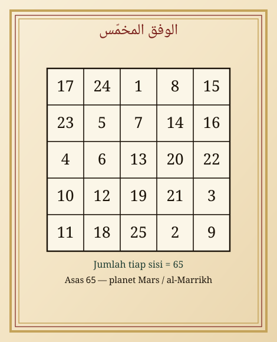
Rajah VI.a — Mukhammas, asas 65, tertib Marrikh. Untuk keteguhan dan menolak kezaliman atas diri, bukan untuk menyerang.
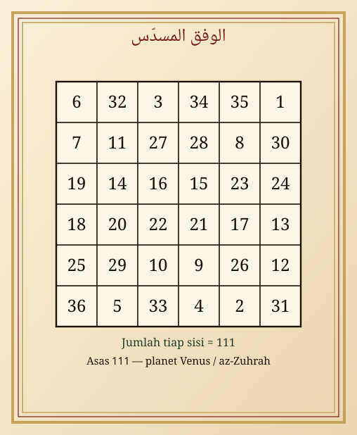
Rajah VI.b — Musaddas, asas 111. Dipakai sebagai pagar rumah dan usaha yang halal.
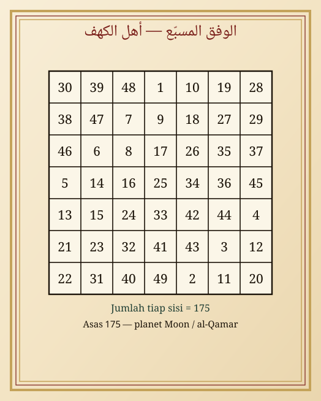
Rajah VI.c — Musabbaʿ, asas 175. Ini kerangka angka bagi wafak Ahlul Kahfi pada bab berikutnya.
| Ordo | Asas | Jumlah total | Kaitan kawkab (tradisi) |
|---|---|---|---|
| 3×3 | 15 | 45 | Zuhal / Saturnus |
| 4×4 | 34 | 136 | Musytarī / Yupiter |
| 5×5 | 65 | 325 | Marrikh / Mars |
| 6×6 | 111 | 666 | Syams / Matahari |
| 7×7 | 175 | 1225 | Zuhrah / Venus (sebagian: Qamar) |
Bab VII Hijāb ʿaẓīm al-qadr
حجاب عظيم القدر
Di antara kandungan naskah yang paling sering disebut ialah ḥijāb ʿaẓīm al-qadr — tabir yang agung nilainya. Bentuknya lingkaran berlapis: Ism al-Jalālah di pusat, asma penjaga di delapan arah, Ayat al-Kursī dan ḥasbalah pada keliling. Ia adalah rajah perlindungan, bukan pedang.

Rajah VII — Hijāb ʿaẓīm al-qadr, lingkaran bersusun.
Kayfiyyah
- Tuliskan pada kertas, dalam keadaan suci, menghadap kiblat.
- Di pusat: الله. Lingkaran dalam: selawat. Lingkaran luar: Ayat al-Kursī atau ḥasbalah.
- Delapan asma pada delapan arah: Ḥāfiẓ, Manīʿ, Muḥīṭ, Māniʿ, Wakīl, Ḥafīẓ, Salām, Muʾmin.
- Baca Ayat al-Kursī 7 kali di atasnya, tiup ke tengah, lalu simpan di rumah atau bawa dengan hormat.
Bab VIII Khātam Sulaimān ʿalaihis-salām
خاتم سليمان عليه السلام
Cincin Nabi Sulaimān dalam ikonografi hikmah digambarkan sebagai dua segitiga yang berjalin — langit dan bumi, amr dan khalq. Ayat yang menjadi napasnya:
إِنَّهُ مِن سُلَيْمَانَ وَإِنَّهُ بِسْمِ اللَّهِ الرَّحْمَٰنِ الرَّحِيمِ أَلَّا تَعْلُوا عَلَيَّ وَأْتُونِي مُسْلِمِينَ
“Sesungguhnya (surat) itu dari Sulaimān dan sesungguhnya (isi)nya: Dengan nama Allah Yang Maha Pengasih, Maha Penyayang. Janganlah kamu berlaku sombong terhadapku dan datanglah kepadaku sebagai orang-orang yang berserah diri.” (An-Naml: 30–31)
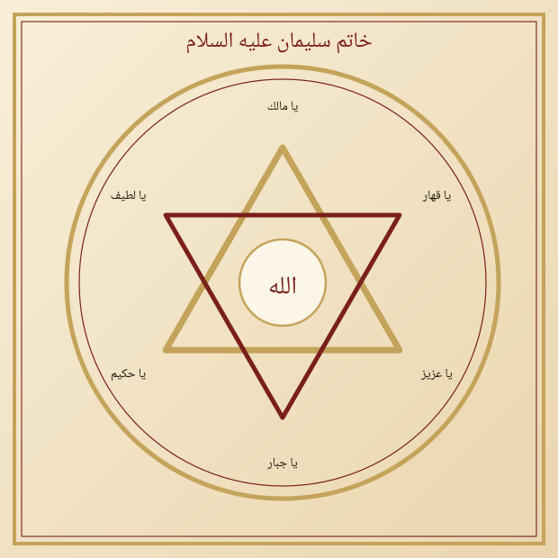
Rajah VIII — Khātam Sulaimān, dua segitiga berjalin, Jalālah di pusat.
Bab IX Wafak Ahlul Kahfi musabbaʿ yang diberkahi
وفق أهل الكهف المسبّع المبارك
Naskah menyebut wafak Ahlul Kahfi al-musabbaʿ al-mubārak. Tujuh pemuda gua dan anjing mereka Qithmīr adalah lambang penjagaan Allah atas hamba yang berlindung. Ordo 7×7, asas 175, dikelilingi nama-nama mereka.
Nama yang beredar dalam tradisi (dengan ragam ejaan antar naskah): Yamlikhā, Maksyalīnā / Maksyilīnā, Masyilīnā, Marnūsy, Dabarnūsy, Syādzanūsy, Kafasthaṭyūsy, dan anjingnya Qithmīr.
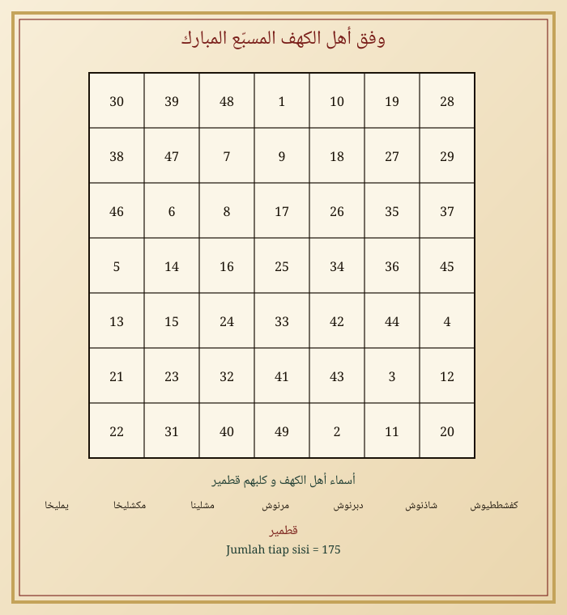
Rajah IX — Musabbaʿ 1–49, nama Ahlul Kahfi dan Qithmīr di bawahnya.
Kayfiyyah
- Ditulis hari Jumat atau Senin, atau malam di mana Surah al-Kahfi dibaca.
- Baca Surah al-Kahfi, atau sekurang-kurangnya ayat 9–26, sebelum dan sesudah menulis.
- Khasiat yang disebut: penjagaan musafir, perlindungan rumah, dan ketenteraman tidur dari gangguan.
Bab X Wafak al-Jalālah khālī al-wasaṭ
وفق الجلالة خالي الوسط
Lafaz الله bernilai 66. Para ahli menurunkan bilangan ini ke dalam mutsallats yang pusatnya dikosongkan — lalu diisi Ism al-Jalālah itu sendiri. Tiap sisi dan keempat sudut berjumlah 66. Pusat tidak dihitung sebagai angka, karena “rumah qalb” adalah Nama, bukan bilangan.
Cara nuzūl yang dipakai di sini: 66 dibagi 12 menghasilkan kunci 5, sisa 6. Kunci dilipatgandakan pada delapan rumah; sisa ditambahkan pada rumah ke-6, 7, dan 8 hingga semua sisi seimbang.
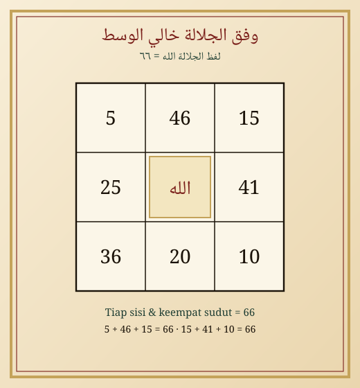
Rajah X — Jalālah khālī al-wasaṭ, tiap sisi 66.
Kayfiyyah
- Tuliskan hari Jumat, jam pertama setelah terbit matahari jika mampu.
- Wirid lafaz Jalālah 66 kali, pelan, dengan ḥuḍūr.
- Dipakai untuk wibawa yang tenang, dikabulkannya doa, dan penjagaan lisan dari dusta — karena Nama ini tidak layak disertai dusta.
Bab XI Wafak asy-Syaibānī — rahasia Ayat al-Kursī
الوفق الشيباني بخاصية السر لآية الكرسي
Naskah menyebut wafak asy-Syaibānī yang dikaitkan kepada sirr Ayat al-Kursī. Ordo 5×5 (asas 65) dengan pusat diganti Ism al-Jalālah: kursi sebagai qalb kotak, sebagaimana Kursī meliputi langit dan bumi.
اللَّهُ لَا إِلَٰهَ إِلَّا هُوَ الْحَيُّ الْقَيُّومُ ۚ لَا تَأْخُذُهُ سِنَةٌ وَلَا نَوْمٌ
“Allah, tidak ada tuhan selain Dia, Yang Maha Hidup, Yang Maha Berdiri sendiri. Tidak mengantuk dan tidak tidur.” (Al-Baqarah: 255)
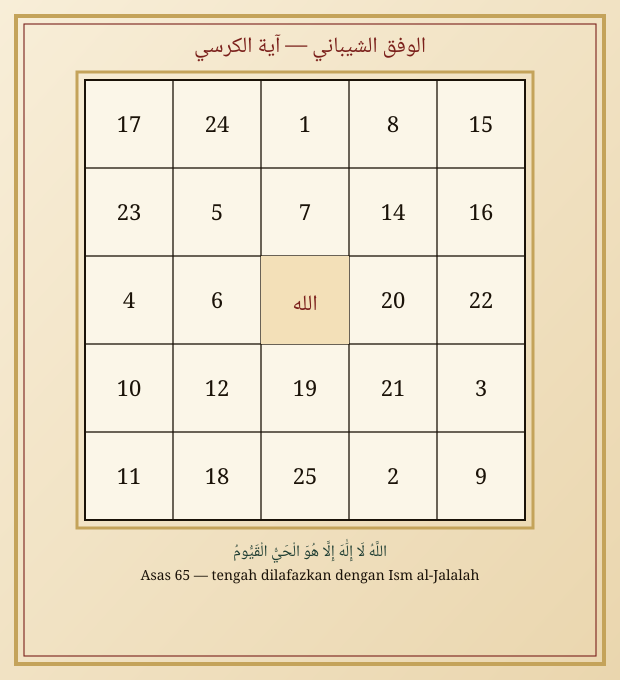
Rajah XI — Mukhammas, pusat Jalālah, keliling Ayat al-Kursī.
Kayfiyyah
- Tulis Ayat al-Kursī utuh di sekeliling kotak, mulai dari kanan atas, berputar.
- Baca ayat itu 7 kali, atau 11, atau 41 — ganjil — dengan niat ḥifẓ.
- Inilah hijab malam: diletakkan di kepala tempat tidur atau dibaca tanpa kertas pun sudah cukup, sebab ayat lebih utama daripada kotak.
Bab XII Wafak Samsamāʾīlī — menolak gangguan jin
الوفق السمسمائيلي لطرد الجن عن أولاد آدم وحواء
Naskah menyebut wafak Samsamāʾīlī khusus untuk mengusir gangguan jin dari anak-anak Ādam dan Ḥawwāʾ. Nama Samsamāʾīl dalam tradisi hikmah disebut sebagai penjaga yang keras terhadap mārīd. Kita tidak menyembahnya, tidak pula memanggilnya sebagai tuhan. Kita memohon kepada Allah dengan asma-Nya yang Qahhār dan Jabbār, dan menulis rajah sebagai doa yang digambar.
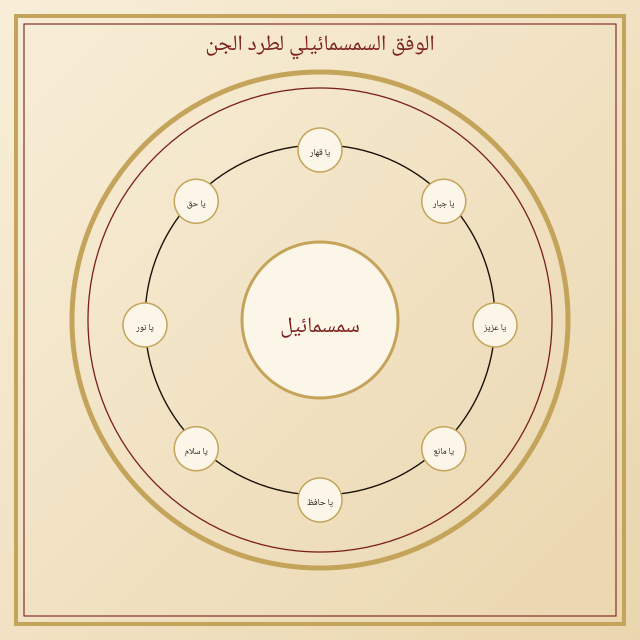
Rajah XII — Lingkaran Samsamāʾīlī, taʿawwudz dan asma al-Qahhār.
Kayfiyyah (yang selamat)
- Sucikan diri. Baca taʿawwudz, Al-Fātiḥah, Ayat al-Kursī, dua muʿawwidzat.
- Tuliskan rajah, atau cukup tempelkan salinannya di rumah yang terganggu.
- Sebagian naskah menyebut bakhoor: lubān dzakar (kemenyan), ḥarmal, dan jāwī — sebagai pengharum ruangan, bukan sebagai sesajen.
- Tiga salinan: satu digantung, satu dibawa, satu dihapus dengan air suci lalu diminum sebagian dan diusapkan — ini pola klasik ruqyah tertulis.
- Jangan menyiksa orang yang “dicurigai kerasukan”. Pengobatan yang kejam bukan sunnah.
Penggalan doa yang beredar bersama rajah ini (dibaca sebagai munajat kepada Allah, bukan sebagai sumpah atas makhluk):
إِلَهِي لَقَدْ أَقْسَمْتُ بِاسْمِكَ دَاعِيًا · بِسِرِّ حُرُوفٍ فِي كِتَابِكَ أُنْزِلَتْ
“Tuhanku, aku bersumpah dengan Nama-Mu sambil berdoa, dengan rahasia huruf-huruf yang Engkau turunkan dalam Kitab-Mu.”
Bab XIII Wafak as-Suhrawardī untuk ḥall al-marbūṭ
وفق السهروردي لحلّ المربوط
Marbūṭ dalam istilah hikmah ialah orang yang diikat — seringkali urusan rumah tangga atau badan — oleh sihir. Ḥall al-marbūṭ adalah melepaskan ikatan itu. Wafak ini disajikan sebagai sarana ruqyah, bukan sebagai senjata untuk mengikat orang lain. Mengikat orang adalah zalim.
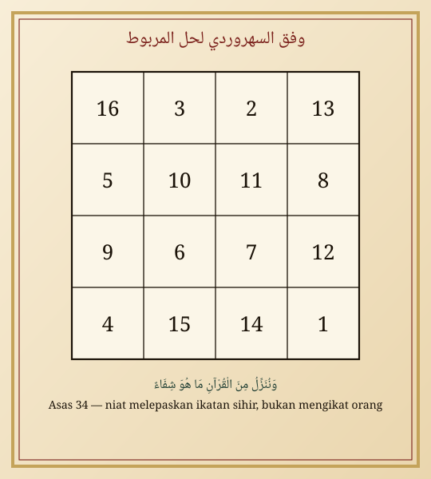
Rajah XIII — Murabbaʿ asas 34, niat melepaskan, bukan mengikat.
Kayfiyyah
- Orang yang diobati bersuci, lalu dibacakan Al-Fātiḥah, Al-Ikhlāṣ, Al-Falaq, An-Nās, dan Ayat al-Kursī.
- Wafak ditulis, dihapus dengan air, diminum dan diusapkan. Atau diletakkan di bawah bantal beberapa malam.
- Perbanyak istigfar. Banyak “ikatan” yang sebenarnya adalah dosa, waswas, atau penyakit — maka obati juga secara syarʿi dan medis.
Bab XIV Mutsallats Abū al-Fatḥ aṣ-Ṣūfī — untuk kebaikan
مثلث أبي الفتح الصوفي للخير
Naskah menyebut mutsallats Abī al-Fatḥ aṣ-Ṣūfī lil-khair wa asy-syarr. Kami hanya menurunkan sisi lil-khair. Segitiga di atas kotak Budūḥ adalah isyarat nuzūl dari atas ke bumi: kebaikan turun, mudarat tidak diundang.
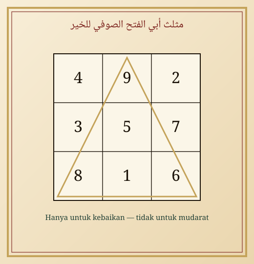
Rajah XIV — Mutsallats Abū al-Fatḥ, hanya tertib kebaikan.
Kayfiyyah lil-khair
- Masukkan hajat yang halal ke dalam niat: kesembuhan, pelunasan utang, keselamatan keluarga.
- Tuliskan kotak, tarik segitiga emas (atau tinta zaʿfarān) menghubungi tiga titik luar.
- Baca Surah al-Fatḥ atau sekurang-kurangnya إِنَّا فَتَحْنَا لَكَ فَتْحًا مُبِينًا 7 kali.
Bab XV Mawaddah dan qabūl antara suami-istri
محبة وقبول بين الزوجين
Naskah menyebut mahabbah dan qabūl. Yang kami terjemahkan hanya untuk suami-istri yang akadnya sah: merukunkan yang sudah dihalalkan Allah, bukan merebut hati orang, bukan pelet, bukan tahyīj.
وَمِنْ آيَاتِهِ أَنْ خَلَقَ لَكُم مِّنْ أَنفُسِكُمْ أَزْوَاجًا لِّتَسْكُنُوا إِلَيْهَا وَجَعَلَ بَيْنَكُم مَّوَدَّةً وَرَحْمَةً
“Dan di antara tanda-tanda-Nya ialah Dia menciptakan pasangan-pasangan untukmu dari jenismu sendiri agar kamu cenderung dan merasa tenteram kepadanya, dan Dia menjadikan di antaramu rasa kasih dan sayang.” (Ar-Rūm: 21)
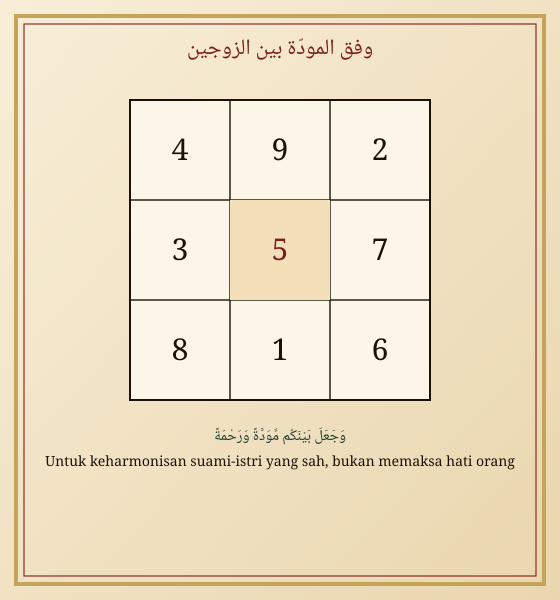
Rajah XV — Wafak mawaddah, pusat 5 sebagai qalb rumah tangga.
Kayfiyyah
- Suami dan istri sama-sama ridha. Tidak ada yang disembunyikan sebagai “pelet” atas pasangannya.
- Tuliskan rajah, baca ayat Ar-Rūm: 21 sebanyak 21 kali, doakan kebaikan masing-masing.
- Letakkan di tempat yang terhormat di rumah, atau cukup amalkan ayatnya setiap malam.
- Perbaiki akhlak: pelet yang paling ampuh adalah lemah lembut dan menunaikan hak.
Bab XVI Saat dan hari kawkab
ساعات الليل والنهار
Ulama hikmah membagi siang dan malam masing-masing menjadi dua belas saat yang beredar mengikuti tertib tujuh kawkab. Ini bukan astrologi yang mendustakan takdir; ini hanya adab memilih waktu, sebagaimana orang memilih waktu mustajab.
| Hari | Kawkab hari | Cocok untuk (yang halal) |
|---|---|---|
| Ahad | Syams | Wibawa, pembukaan, hijab agung |
| Senin | Qamar | Perjalanan, Ahlul Kahfi, urusan air dan rumah |
| Selasa | Marrikh | Keteguhan, menolak kezaliman atas diri |
| Rabu | ʿUṭārid | Tulis-menulis, ilmu, hisab huruf |
| Kamis | Musytarī | Rezeki, murabbaʿ, sedekah |
| Jumat | Zuhrah | Jalālah, mawaddah, wewangian |
| Sabtu | Zuhal | Budūḥ, penutupan, kesabaran panjang |
Jika tidak tahu jam planet, tulislah setelah salat subuh atau antara magrib dan isya. Waktu yang paling utama tetap waktu yang di dalamnya engkau hadir kepada Allah.
Bab XVII Bab yang ditahan, tidak diterjemahkan sebagai amalan
أبواب ذكرت في الأصل ولم تُنزل عملاً
Demi kejujuran terhadap naskah, dicatat di sini judul-judul yang muncul pada daftar isi sebagian cetakan, tetapi tidak kami turunkan rajah operasionalnya:
- Irsāl al-malik al-aʿẓam — pengiriman “raja agung”.
- Aʿmāl al-maḥabbah wa al-jalb wa at-tahyīj — pelet dan penghasutan syahwat.
- Bāb irsāl ʿaẓīm al-fiʿl dan irsāl hātif liẓ-ẓalamah — mengirim bisikan atau makhluk kepada orang.
- Jalbu az-zabūn dan kawin paksa atas gadis yang “tersisa”.
- Sisi syarr pada mutsallats Abū al-Fatḥ.
Bab XVIII Khātimah
الخاتمة
Selesailah edisi digital ini. Setiap rajah yang engkau lihat hanyalah garis dan angka. Yang hidup adalah zikir. Jika suatu hari kotak-kotak ini membuatmu lalai dari salat, bakarlah kertasnya dan simpan ayatnya di dada.
سُبْحَانَ رَبِّكَ رَبِّ الْعِزَّةِ عَمَّا يَصِفُونَ وَسَلَامٌ عَلَى الْمُرْسَلِينَ وَالْحَمْدُ لِلَّهِ رَبِّ الْعَالَمِينَ
Maha Suci Tuhanmu, Tuhan Yang mempunyai keperkasaan, dari apa yang mereka katakan. Keselamatan atas para rasul. Segala puji bagi Allah, Tuhan semesta alam.
Ya Allah, jadikan huruf-huruf ini nur, bukan fitnah; jadikan bilangan ini tertib, bukan kesombongan; dan jadikan kami di antara orang yang berpegang pada Kitab-Mu lebih daripada berpegang pada kotak.